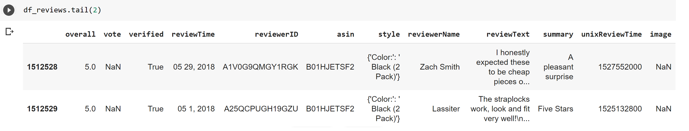

Sentiment Analysis and Machine Learning on Reviews
Here I analyzed Amazon review data to get some practice with machine learning and natural language processing. I decided to focus specifically on Amazon's Musical Instruments section to save on computing resources since the whole dataset is huge.
The data comes from https://nijianmo.github.io/amazon/index.html
And this is the Jupyter/Colab notebook that I worked on.
Preprocessing and Analytics
Before anything, I cleaned up the data and did some basic bar charts to get an idea of the number of companies involved and the number of Musical Instruments subcategories.
Some key takeaways from this part: there's a lot of missing data (which gets accounted for later). Some aspects of the data are also heavily skewed just because of how Amazon is: 50% of brands sell only one product. 80% sell five products or less.
Because of that I only look at brands that sell 500 or more different products, and subcategories with 1000 or more items with that tag.Word Frequencies in Good and Bad Reviews
The raw data comes like:
After cleaning and taking what's necessary it turns into:
I deleted unimportant columns, transformed ratings to replace 4 and 5 for positive and 1 and 2 for negative (deleting 3) and got subcategory by joining the review dataframe and the product dataframe through "asin", the product id.
After removing characters that don't add value like punctuation, stopwords, and after splitting up negative and positive reviews, we can get a better idea of what words help make something either positive or negative and what some of the motifs are by using the WordCloud module.


We see sound is the most mentioned thing in both. "Work(s)" and "quality" are also pretty big which makes sense.
I thought it'd be more useful to have the same thing but for specific categories—to see what makes, for example, a guitar good or not. This is the output for negative hand percussion and positive synths, but the function works with either sentiment and any valid subcategory.

These are way more descriptive than the general ones. "Bell" shows up a lot on negative reviews for hand percussion; the bell is something those sellers should look into fixing or improving. A synth's software and samples are a big talking point in positive reviews; regular solid updates and an emphasis on good out-of-box samples could be worthwhile investments. This could be a really useful tool to gauge public opinion on anything.
I also wanted to see if top ranked products' descriptions had any patterns, specifically in their tone and their word count. I used VADERsentiment to analyze the tone and a basic word count for word length. There didn't seem to be any patterns at all in the way highly ranked products were writing their product descriptions compared to lower ranks. Either way, it was worth exploring.
Machine Learning with NLTK
I used NLTK's Naive Bayes classifer to train the data. These are the most informative words for classifying a review as positive or negative:
Something like "trash" and "refund" are more indicative of a negative review than a positive one, while "exceeded" is the opposite.
We can use the classifier to come up with predictions.
If the review is straightforward it has a decent chance of getting it right, like the first sentence. "Durable" has positive connotation, so it predicts positive.
In the second one, "not really" is probably what gives it away as a negative review.
It becomes harder for the model to predict right when you give it a mix of both. In the third one, it sees the word "great" and predicts it positive, but of course you and I can tell it's negative.
The model struggles with reviews that had sarcasm and double negatives and things like that. Accounting for those nuances, and continuously training and tweaking the model to get better accuracy, would definitely be major points moving forward.References
Justifying recommendations using distantly-labeled reviews and fined-grained aspects
Jianmo Ni, Jiacheng Li, Julian McAuley
Empirical Methods in Natural Language Processing (EMNLP), 2019